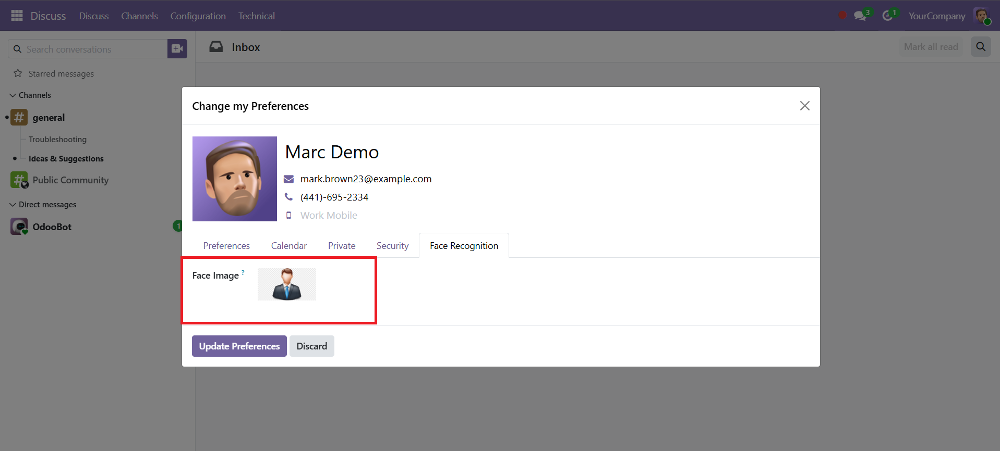
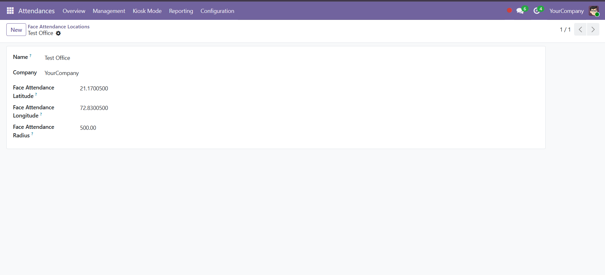

Attendance Configuration & Setup
Configure the required attendance settings before using camera capture, face recognition, kiosk attendance, and location-based validation.
1. Face Image Registration
Users can upload or update their face image from My Profile.

2. Employee Face Registration
Add the employee face image that will be used for face recognition.
3. Attendance Settings
Configure camera capture, face recognition, and backend attendance options.

4. Face Attendance Location
Configure authorized attendance locations with latitude, longitude, and radius.
